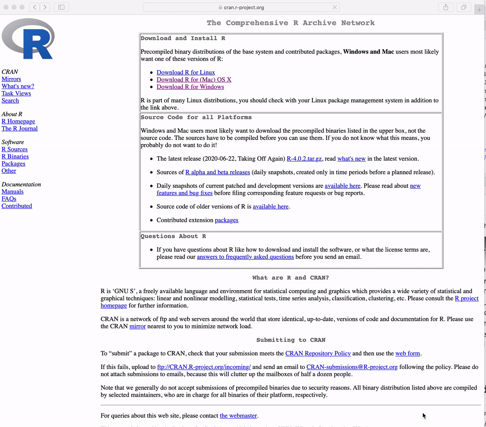

install.packages("tidyverse")Syllabus
Course Information
- Location: In person and Online for Fall 2022
- Course time: Tuesdays and Thursdays from 1:30-2:50pm (Eastern Daylight Time zone)
- Course location: W2008
- Assignments: Three projects
How to register and participate
- To add the course to your 1st term registration: You can sign up for either the in person (140.776.01) or online only (140.776.41) course.
- All lectures will be recorded and posted on CoursePlus. You can watch all lecture material and complete the assignments asynchronously.
- Please course instructor if interested in auditing.
Instructor
- Stephanie C. Hicks (https://www.stephaniehicks.com)
- Office Location: E3545, Wolfe Street building
- Email: shicks19@jhu.edu
Instructor office hours are announced on CoursePlus. If there are conflicts and/or need to cancel office hours, announcements will be made on CoursePlus.
Teaching Assistants
- Phyllis Wei (ywei43@jhu.edu)
- Joe Sartini (jsartin1@jhu.edu)
TA office hours are announced on CoursePlus.
Getting help
In order of preference, here is a preferred list of ways to get help:
- We strongly encourage you to use CoursePlus to ask questions first, before joining office hours. The reason for this is so that other students in the class (who likely have similar questions) can also benefit from the questions and answers asked by your colleagues.
- You are welcome to join office hours to get more group interactive feedback.
- If you are not able to make the office hours, appointments can be made by email with either the instructor or the TAs.
Important Links
- Course website: https://stephaniehicks.com/jhustatcomputing2022
- GitHub repository with all course material: https://github.com/stephaniehicks/jhustatcomputing2022
Learning Objectives:
Upon successfully completing this course, students will be able to:
- Install and configure software necessary for a statistical programming environment
- Discuss generic programming language concepts as they are implemented in a high-level statistical language
- Write and debug code in base R and the tidyverse (and integrate code from Python modules)
- Build basic data visualizations using R and the tidyverse
- Discuss best practices for coding and reproducible research, basics of data ethics, basics of working with special data types, and basics of storing data
Lectures
In Fall 2022, we will have in person lectures that will be recorded enabling an entirely online section for the course too. Mandatory attendance is not required.
Textbook and Other Course Material
There is no required textbook. We will make use of several freely available textbooks and other materials. All course materials will be provided. We will use the R software for data analysis, which is freely available for download.
Software
We will make heavy use of R in this course, so you should have R installed. You can obtain R from the Comprehensive R Archive Network. There are versions available for Mac, Windows, and Unix/Linux. This software is required for this course.
It is important that you have the latest version of R installed. For this course we will be using R version 4.2.1. You can determine what version of R you have by starting up R and typing into the console R.version.string and hitting the return/enter key. If you do not have the proper version of R installed, go to CRAN and download and install the latest version.
We will also make use of the RStudio interactive development environment (IDE). RStudio requires that R be installed, and so is an “add-on” to R. You can obtain the RStudio Desktop for free from the RStudio web site. In particular, we will make heavy use of it when developing R packages. It is also essential that you have the latest release of RStudio. You can determine the version of RStudio by looking at menu item Help > About RStudio. You should be using RStudio version 1.4.1106 or higher.
Projects
There will be 4 assignments, due every 2–3 weeks. Projects will be submitted electronically via the Drop Box on the CoursePlus web site (unless otherwise specified).
The project assignments will be due on
- Project 0: September 8, 1:29pm (entirely optional and not graded but hopefully useful and fun)
- Project 1: September 16, 11:59pm
- Project 2: September 30, 11:59pm
- Project 3: October 21, 11:59pm
Project collaboration
Please feel free to study together and talk to one another about project assignments. The mutual instruction that students give each other is among the most valuable that can be achieved.
However, it is expected that project assignments will be implemented and written up independently unless otherwise specified. Specifically, please do not share analytic code or output. Please do not collaborate on write-up and interpretation. Please do not access or use solutions from any source before your project assignment is submitted for grading.
Discussion Forum
The course will make use of the CoursePlus Discussion Forum in order to ask and answer questions regarding any of the course materials. The Instructor and the Teaching Assistants will monitor the discussion boards and answer questions when appropriate.
Exams
There are no exams in this course.
Grading
Grades in the course will be based on Projects 0–3 with a percentage of the final grade being apportioned to each assignment. Each of Projects 1–3 counts approximately equally in the final grade. Grades for the projects and the final grade will be issued via the CoursePlus grade book.
Academic Ethics and Student Conduct Code
Students enrolled in the Bloomberg School of Public Health of The Johns Hopkins University assume an obligation to conduct themselves in a manner appropriate to the University’s mission as an institution of higher education. A student is obligated to refrain from acts which he or she knows, or under the circumstances has reason to know, impair the academic integrity of the University. Violations of academic integrity include, but are not limited to: cheating; plagiarism; knowingly furnishing false information to any agent of the University for inclusion in the academic record; violation of the rights and welfare of animal or human subjects in research; and misconduct as a member of either School or University committees or recognized groups or organizations.
Students should be familiar with the policies and procedures specified under Policy and Procedure Manual Student-01 (Academic Ethics), available on the school’s portal.
The faculty, staff and students of the Bloomberg School of Public Health and the Johns Hopkins University have the shared responsibility to conduct themselves in a manner that upholds the law and respects the rights of others. Students enrolled in the School are subject to the Student Conduct Code (detailed in Policy and Procedure Manual Student-06) and assume an obligation to conduct themselves in a manner which upholds the law and respects the rights of others. They are responsible for maintaining the academic integrity of the institution and for preserving an environment conducive to the safe pursuit of the School’s educational, research, and professional practice missions.
Disability Support Service
Students requiring accommodations for disabilities should register with Student Disability Service (SDS). It is the responsibility of the student to register for accommodations with SDS. Accommodations take effect upon approval and apply to the remainder of the time for which a student is registered and enrolled at the Bloomberg School of Public Health. Once you are f a student in your class has approved accommodations you will receive formal notification and the student will be encouraged to reach out. If you have questions about requesting accommodations, please contact BSPH.dss@jhu.edu.
Prerequisites
This is a quantitative course. We will not discuss the mathematical details of specific data analysis approaches, however some statistical background and being comfortable with quantitative thinking are useful. Previous experience with writing computer programs in general and R in particular is also helpful, but not necessary. If you have no programming experience, expect to spend extra time getting yourself familiar with R. As long as you are willing to invest the time to learn the programming and you do not mind thinking quantitatively, you should be able to take the course, independent of your background.
Formal requirement for the course is Biostatistics 140.621. Knowledge of material from 140.621 is assumed. If you didn’t take this course, please contact me to get permission to enroll.
Getting set up
You must install R and RStudio on your computer in order to complete this course. These are two different applications that must be installed separately before they can be used together:
R is the core underlying programming language and computing engine that we will be learning in this course
RStudio is an interface into R that makes many aspects of using and programming R simpler
Both R and RStudio are available for Windows, macOS, and most flavors of Unix and Linux. Please download the version that is suitable for your computing setup.
Throughout the course, we will make use of numerous R add-on packages that must be installed over the Internet. Packages can be installed using the install.packages() function in R. For example, to install the tidyverse package, you can run
in the R console.
How to Download R for Windows
Go to https://cran.r-project.org and
Click the link to “Download R for Windows”
Click on “base”
Click on “Download R 4.2.1 for Windows”
Warning
The version in the video is not the latest version. Please download the latest version.

How to Download R for the Mac
Goto https://cran.r-project.org and
Click the link to “Download R for (Mac) OS X”.
Click on “R-4.2.1.pkg”
Warning
The version in the video is not the latest version. Please download the latest version.

How to Download RStudio
Goto https://rstudio.com and
Click on “Products” in the top menu
Then click on “RStudio” in the drop down menu
Click on “RStudio Desktop”
Click the button that says “DOWNLOAD RSTUDIO DESKTOP”
Click the button under “RStudio Desktop” Free
Under the section “All Installers” choose the file that is appropriate for your operating system.
Warning
The video shows how to download RStudio for the Mac but you should download RStudio for whatever computing setup you have

General Disclaimers
- This syllabus is a general plan, deviations announced to the class by the instructor may be necessary.